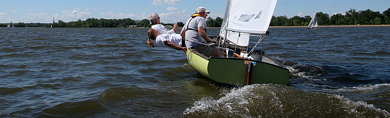
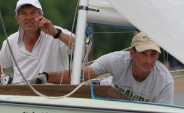
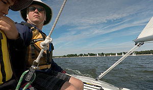

Links for area Sailing Classes, Rides & Crewing Opportunities

Creve Coeur Lake

Creve Coeur Sailing Association
"Crew & Interest Form"Can't wait for a race day and want to introduce yourself? Some of our skipers need crew for racing from time to time. It also shows us your interested. Fill out this web form and you'll be on our radar. Carlyle Sailing Association
Sailing Rides, Classes & Programs
Adult 3-Day Sailing Seminar
June 10-12, 2015 @ Carlyle LakeThe 3-day seminar is a hands on and on the water class designed for beginners and intermediate sailors. The club provides a generous mix of their own boats ranging from small two personal boats (Flying Scots) to two huled boats (Hobie 18) to cabin boats (San Juan 21) . The popular class fill sup quickly so get reserve your spot today! Junior Sailing Camp @ Carlyle Lake
Dates: June 14-19, 2015The Junior Sailing Camp is a 30-year tradition at CSA. The week long camp is designed for youth between 10 and 16 yrars old and its aim is to make racers out of beginners. No prerequisite knowledge required but helpful. Campers are taught and managed by ASA Certified Instructors. (Membership with CSA or fellow Carlyle Sailing club required. Follow above link for details).

Carlyle Sailing Association's
Famous Crew FormCrewing is a great way to learn how to sail and compete in races at one fo the regions best sailboat racing lakes. Add yourself to their crew list. Follow the above link.